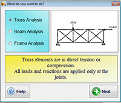

The PFA 2-D program has been developed with very user friendly steps. Any individual conversant with how to manually analyze
a structure using the stiffness matrix approach will find it very easy to use. The basic steps involved in using
it are presented below.
This tool is used to obtain blast load parameters such as incident pressure, reflected pressure, duration of loading, etc for design purposes.